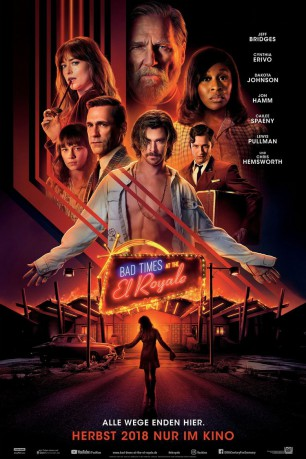

#10224 Bad Times at the El Royale
 gesehen am 12.01.2019
gesehen am 12.01.2019
 
 IMDB-Wertung: 7.3 / 10
IMDB-Wertung: 7.3 / 10  Tomatometer: 75
Tomatometer: 75  Metascore: 60
Metascore: 60 
Sieben Fremde, jeder mit einem dunklen Geheimnis, treffen am Lake Tahoe im El Royale zusammen, einem heruntergekommenen Hotel mit düsterer Vergangenheit. Im Verlauf einer verhängnisvollen Nacht bekommt jeder eine letzte Chance auf Erlösung... bevor alles zum Teufel geht.
Jahr: 2018
Dauer: 141 Minuten
FSK: 16
Land: USA Studio: Twentieth Century FoxTonspuren:
Untertitel: Deutsch, Englisch,
Auflösung: 1080p (1920x808) Größe: 10045 MB
Genre: Thriller, Drama, Krimi, Mystery
Regisseur: Drew Goddard
Drehbuch: Drew Goddard
Soundtrack: Michael Giacchino
Darsteller:
 Jeff Bridges als Father Daniel Flynn / Dock O'Kelly
Jeff Bridges als Father Daniel Flynn / Dock O'Kelly- Cynthia Erivo als Darlene Sweet
 Dakota Johnson als Emily Summerspring
Dakota Johnson als Emily Summerspring Jon Hamm als Laramie Seymour Sullivan / Dwight Broadbeck
Jon Hamm als Laramie Seymour Sullivan / Dwight Broadbeck Chris Hemsworth als Billy Lee
Chris Hemsworth als Billy Lee- Cailee Spaeny als Rose Summerspring
- Lewis Pullman als Miles Miller
 Nick Offerman als Felix O'Kelly
Nick Offerman als Felix O'Kelly Xavier Dolan als Buddy Sunday
Xavier Dolan als Buddy Sunday Shea Whigham als Dr. Woodbury Laurence
Shea Whigham als Dr. Woodbury Laurence Mark O'Brien als Larsen Rogers
Mark O'Brien als Larsen Rogers Charles Halford als Sammy Wilds
Charles Halford als Sammy Wilds Jim O'Heir als Milton Wyrick
Jim O'Heir als Milton Wyrick- Alvina August als Vesta Shears
 Bethany Brown als Florence Lemons (Vesta's Backup Singer)
Bethany Brown als Florence Lemons (Vesta's Backup Singer) Rebecca Toolan als Helen Gandy
Rebecca Toolan als Helen Gandy- Hannah Zirke als Young Emily Summerspring
- Billy Wickman als Hutch Summerspring
 William B. Davis als Judge Gordon Hoffman
William B. Davis als Judge Gordon Hoffman- Manny Jacinto als Waring 'Wade' Espiritu
- Tally Rodin als Silvana 'Millie' Melvin
- Sophia Lauchlin Hirt als Annabell Czuchlewski
- Jonathan Whitesell als Chris 'Flicker' Grimes
 Katharine Isabelle als Auntie Ruth Pugh
Katharine Isabelle als Auntie Ruth Pugh- Sarah Smyth als Ginger Miller
- Jocelyne Gaumond als Keno Girl (uncredited)
- Austin James als Soldier (uncredited)
- James Quach als NVA Captain (uncredited)
 John Specogna als District Attorney (uncredited)
John Specogna als District Attorney (uncredited)- Vincent Washington als Sergeant Renfro (uncredited)
- Gerry Nairn als Reporter Paul Kraemer
- London Morrison als Angela Harris (Vesta's Backup Singer)
- Charlotte Mosby als Young Rose Summerspring
- Synto D. Misati als Norris 'Roman' Kindel
- Austin Abell als Young Miles Miller
- Kate Gajdosik als Field Reporter (uncredited)
- Caroline Koziol als Ivona (uncredited)
- Camille Paulmier als Casino Waitress (uncredited)
- Minn Vo als Vietnamese Soldier (uncredited)
Datei: X:\2018(A-F)\Bad Times at the El Royale (2018, FSK16, 1920x808).mkv seit 25.12.2018
Festplatte: HD 2017(A-Z)-2018(A-F)
 Es gibt insgesamt 151 Filme in der Gruppe '2018(A-F)'
Es gibt insgesamt 151 Filme in der Gruppe '2018(A-F)'